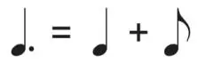
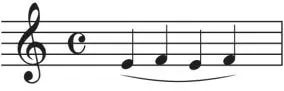
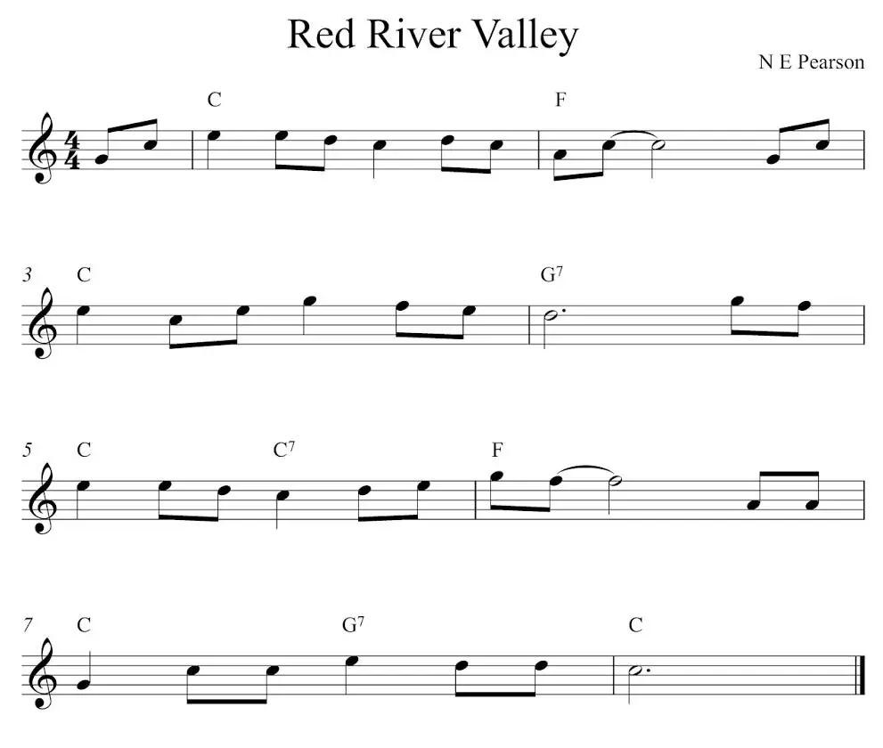

Módulo 3
Ponto de Aumento e Ponto de Diminuição
Ponto de Aumento
É um ponto colocado ao lado direito da nota, que faz com que a duração dela aumente pela sua metade. Podemos tomar como exemplo uma semínima pontuada. Neste caso, ela terá o valor de 1 tempo e meio, que é o resultado da soma do seu valor (1 tempo) com a sua metade (½ tempo).
Ponto de Diminuição
Também conhecido como Staccato (traduzido como destacado), é um ponto colocado acima ou abaixo da nota. Tem a função de indicar que a nota deve ser “destacada” das demais, tendo assim, uma curta duração.

Legato e Ligadura
Legato
Traduzido para a língua portuguesa como ligado, indica que as notas devem ser tocadas sucessivamente, sem interrupções entre elas, transmitindo a sensação de um som contínuo.
Ligadura
É uma linha curva posicionada acima ou a seguir das notas que tem a função de indicar o Legato.
Exemplo de Partitura
Veja abaixo uma música escrita na Partitura.
É muito importante que você entenda como a teoria se aplica na prática. Tente ler a partitura acima e identifique cada um dos elementos aprendidos.